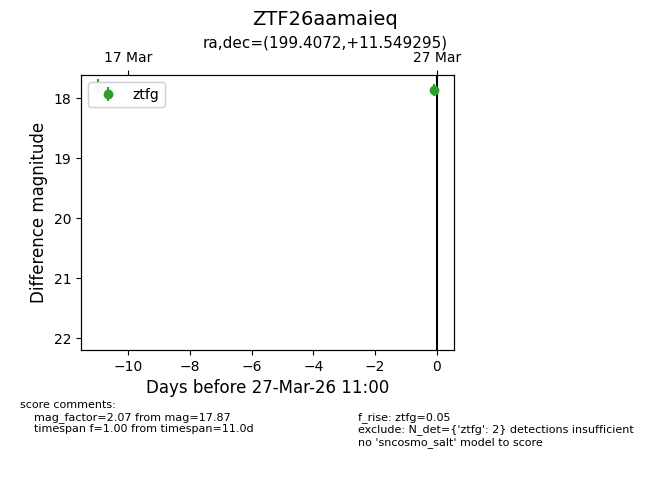
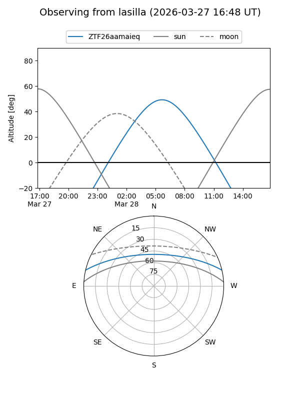
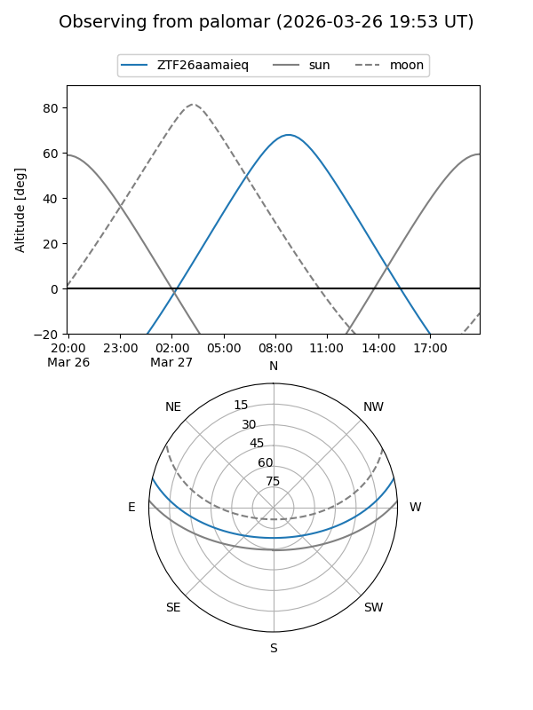

ZTF26aamaieq
Target ZTF26aamaieq at 2026-03-27 11:03
Aliases and brokers:
FINK: link
Lasair: link
ALeRCE: link
alt names
ZTF26aamaieq (ztf,fink_ztf)
Coordinates:
equatorial (ra, dec) = 199.4072,+11.54929
equatorial (HMS+DMS) = 13:17:37.74,+11:32:57.46
galactic (l, b) = (325.7416,+73.25044)
Flags:
Photometry:
last ztfg=17.87
2 ztfg detections
Lightcurve

Visibility


Additional plots